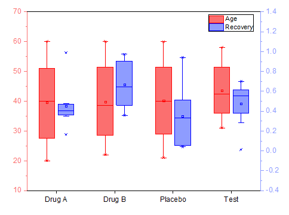

Boxdiagramm mit 2Y
2Ys-Box-Chart

Datenanforderungen
Sie brauchen mehrere Spalten, unabhängig von der Spaltenzuweisung.
Angefangen bei der ersten Spalte, die in den ersten Layer gezeichnet wird, werden jeweils zwei aufeinanderfolgende Spalten der Reihenfolge nach in zwei verschiedene Layer gezeichnet.
Diagramm erstellen
- Wählen Sie die gewünschten Daten aus.
- Wählen Sie im Menü .
Vorlage
2Ys_Box.otpu
Diese Vorlage ist im Origin-Programmordner installiert.
Notizen
- Alle Boxdiagramme im gleichen Layer haben den gleichen Stil. Die Farbe der Boxen folgt der Y-Achse.
- Sobald Sie mehrere Y-Spalten zum Zeichnen dieses Diagramms ausgewählt haben, werden die Langnamen (wenn es keine gibt, dann die Kurznamen) der ungeraden Spalten als Hilfsstrichsbeschriftungen der X-Achse verwendet.
- Layer 2 wurde mit Layer 1 verknüpft. Die X-Achse von Layer 2 wurde mit der X-Achse von Layer 1 verknüpft (Gerade 1 zu 1).
- Der Abstand der zwei Boxen an derselben X-Position wird von der Option Überschneiden (%, negativ für Abstand) auf der Registerkarte Abstände auf Zeichnungsebene des Dialogs Details Zeichnung gesteuert, die mit der ersten Zeichnung des ersten Layers verbunden ist.